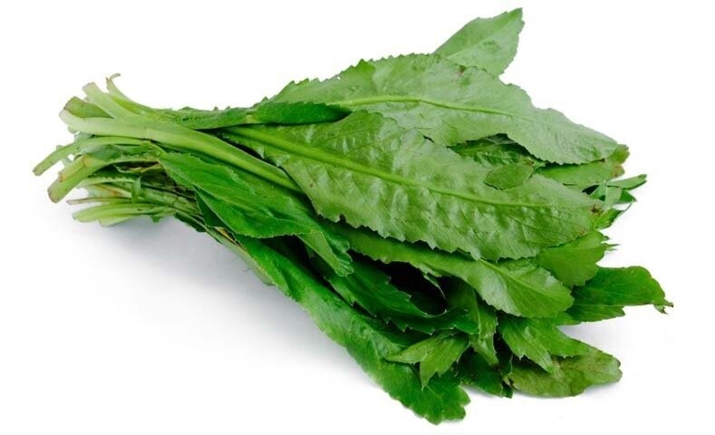

El perejil es una planta herbácea comestible que proviene del Mediterráneo.
Su nombre científico es Petroselinum crispum y proviene de la palabra griega
petrol, que significa piedra o roca.
peregil

descripcion
El cilantro cimarrón es una planta aromática que le encanta la humedad.
Es recomendable sembrarla a la sombra o semisombra. Se adapta a cualquier
tipo de suelo y es de fácil trasplante para las huertas caseras